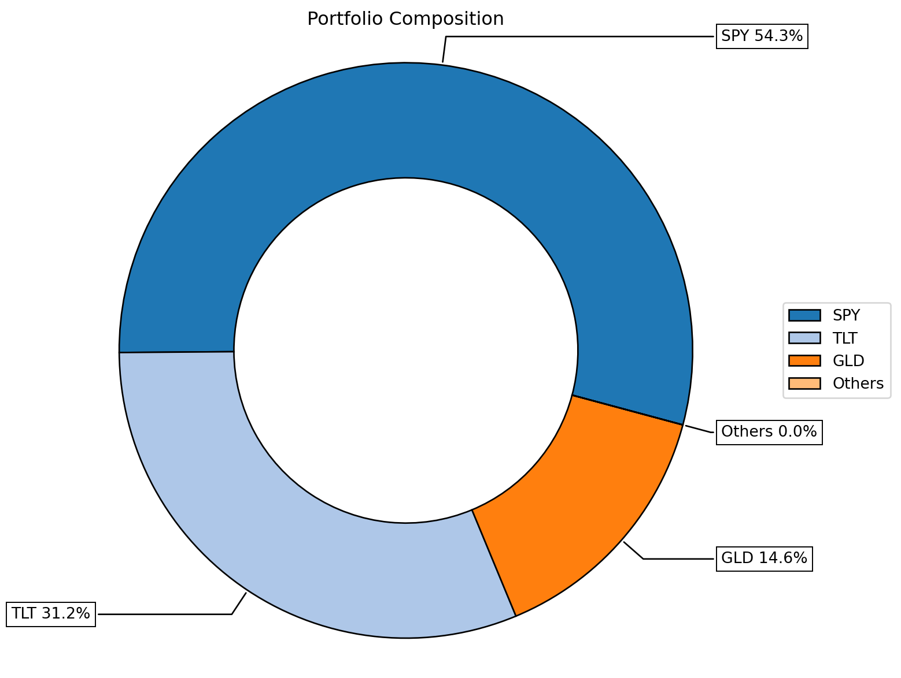
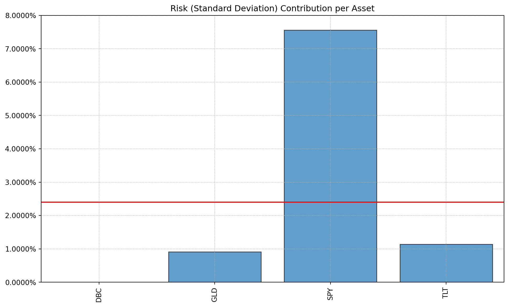

import pandas as pd
import riskfolio as rp
import yfinance as yf
import matplotlib.pyplot as pltPortfolio Optimization using Python
Introduction
To achieve financial independence, everyone should learn how to invest and manage their own portfolio. If you come from a data science / finance background, wouldn’t it be great to employ financial / data science techniques to obtain a greater degree of control over your investments. Using a systematic approach to determine portfolio allocation is ideal in scenarios where you want to be disciplined and remove emotions from investing. With easy to access python libraries like Pandas, yfinance, and Riskfolio-Lib, as retail investors, we too can use techniques that wealth managers and financial institutions use. This tutorial will go over how to perform mean-variance optimization (MVO) to obtain an optimal and efficient portfolio.
Background
I’m Jason Lee, a Chartered Financial Analyst (CFA) who has worked in the financial industry for 5+ years. I’m currently a UBC master of data science graduate student. I don’t claim to be a financial advisor. All investing incurs an element of risk and should be heeded with caution. I just want to provide a framework that investors can use to test investing ideas and aid them on their journey to financial independence.
Workflow
- Problem Definition: Setting investment goals and constraints
- Data Collection: Importing data from yfinance (Yahoo finance)
- Portfolio Construction: Using Riskfolio-Lib to create efficient portfolios
- Visualization: Displaying results through efficient frontiers and allocation breakdowns
Problem Definition
In order to set investment goals, we need to understand the following: 1. Ability to take risk 2. Willingness to take risk 3. Time horizon 4. Liquidity needs
Investor profile: The investor is a working professional in their mid-twenties. Since they plan to retire at 65, they have a long time horizon of 40 years. With a long time horizon, they have a high risk tolerance as they can recover from possible portfolio drawdowns. They currently have $30,000 in liquid assets that they can invest in. They don’t have any large upcoming liquidity needs. Their main liquidity needs come from rent, monthly expenses and car insurance. With this risk profile, they wish to earn 10% annual return.
Imports
Data Collection
- For data collection, I will use yfinance
- Using a few lines of python, it allows users to download market data from Yahoo! Finance’s API yfinance
# Define tickers for ETFs
tickers = ['SPY', 'TLT', 'GLD', 'DBC'] # Equities, Bonds, Gold, Commodities
# Download historical price data
data = yf.download(tickers, start="2010-01-01", end="2024-12-25")['Close']
# Calculate daily returns
returns = data.pct_change().dropna()
returns[ 0% ][**********************50% ] 2 of 4 completed[**********************75%*********** ] 3 of 4 completed[*********************100%***********************] 4 of 4 completed| Ticker | DBC | GLD | SPY | TLT |
|---|---|---|---|---|
| Date | ||||
| 2010-01-05 | 0.001189 | -0.000911 | 0.002647 | 0.006458 |
| 2010-01-06 | 0.017808 | 0.016500 | 0.000704 | -0.013387 |
| 2010-01-07 | -0.012442 | -0.006188 | 0.004221 | 0.001682 |
| 2010-01-08 | -0.000787 | 0.004963 | 0.003328 | -0.000447 |
| 2010-01-11 | -0.003152 | 0.013289 | 0.001396 | -0.005487 |
| ... | ... | ... | ... | ... |
| 2024-12-18 | -0.009058 | -0.019185 | -0.029803 | -0.012504 |
| 2024-12-19 | 0.000000 | 0.001421 | -0.000307 | -0.015141 |
| 2024-12-20 | 0.006399 | 0.010434 | 0.012011 | 0.005694 |
| 2024-12-23 | 0.000765 | -0.004709 | 0.005988 | -0.009172 |
| 2024-12-24 | 0.005736 | 0.001992 | 0.011115 | 0.004229 |
3769 rows × 4 columns
Portfolio Construction
# Create Portfolio Object
port = rp.Portfolio(returns=returns)
# Set the estimation methods for expected returns and covariance
method_mu = "hist"
method_cov = "hist"
# Update the portfolio object to use these methods
port.assets_stats(method_mu=method_mu, method_cov=method_cov)
# Estimate optimal portfolio:
model='Classic'
rm = 'MV' # Risk measure used, this time will be variance
obj = 'Sharpe' # Objective function
hist = True # Use historical scenarios for risk measures that depend on scenarios
rf = 0 # Risk free rate
l = 0 # Risk aversion factor, only useful when obj is 'Utility'
# mean-variance optimization framework
w = port.optimization(model=model, rm=rm, obj=obj, rf=rf, l=l, hist=hist)
# Display Weights
print(w) weights
DBC 6.796966e-10
GLD 1.456304e-01
SPY 5.428307e-01
TLT 3.115389e-01Visualization
# Plot the portfolio weights determined by equal risk contribution
ax = rp.plot_pie(w=w)
# Plot the risk contributions of each ETF which as we can see is
# equal.
ax = rp.plot_risk_con(
w,
cov=port.cov,
returns=port.returns,
rm="MV",
rf=0.05
)